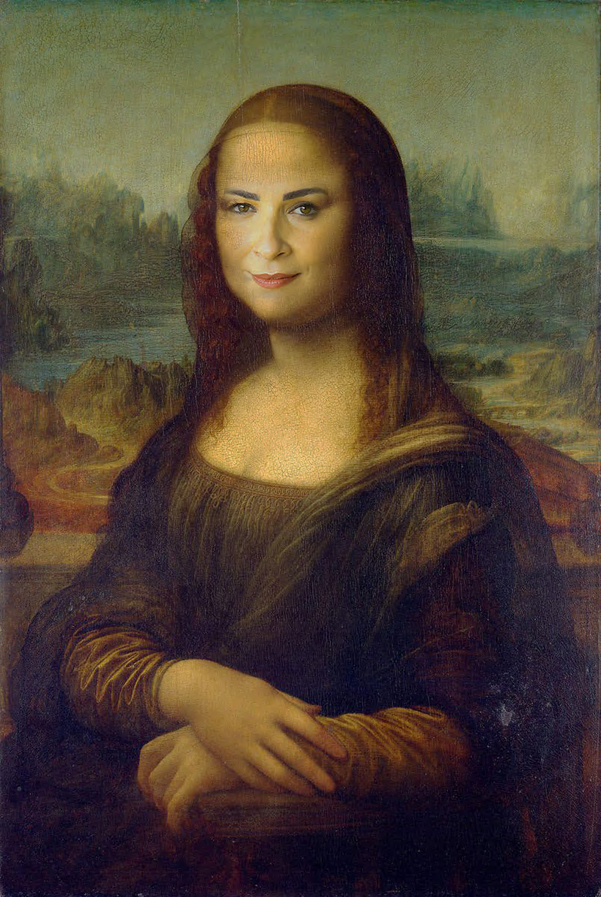
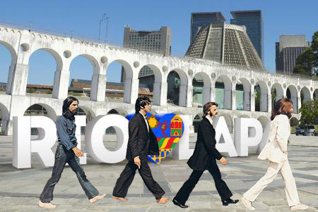
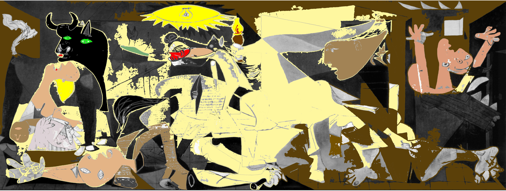
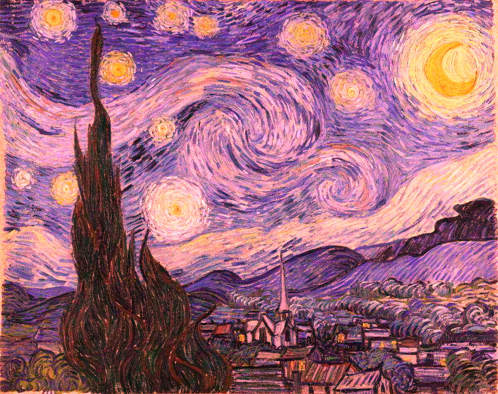
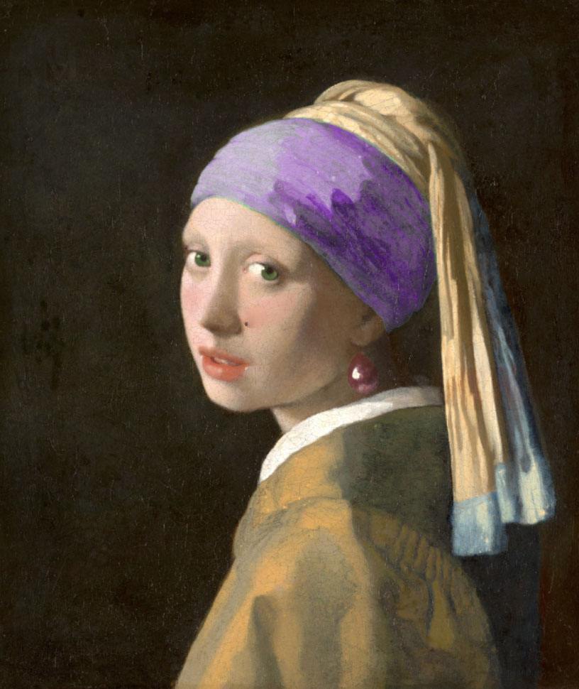

Questão 1
Assim como Warhol, replique a lata de sopa várias vezes e crie um conjunto de sopas, só que agora as sopas devem ser redimensionadas em diversos tamanhos diferentes.
Questão 2
Recorte um rosto à sua escolha e aplique acima do rosto mais famoso da história da arte para transformar Mona Lisa em outra pessoa.
Questão 3
Recorte os integrantes da banda Beatles e coloque-os em outro ambiente. Quem sabe em outra rua famosa, outro país ou até fora da Terra!
Questão 4
A obra Guernica retrata o bombardeio à cidade de Guernica durante a Guerra Civil Espanhola (1936-1939). A tristeza e o sofrimento são representados, entre muitos elementos visuais escolhidos por Picasso, pela paleta cromática em preto e branco.
Que tal trazer outras sensações e novos significados colorindo o quadro com outras cores?
Crie seleções e aplique cores nas áreas escolhidas.
Questão 5
Usando as ferramentas de ajuste de cor, mude as cores de A Noite Estrelada
Questão 6
Use sua imaginação e as ferramentas de edição de imagens que quiser para modificar o quadro abaixo.
